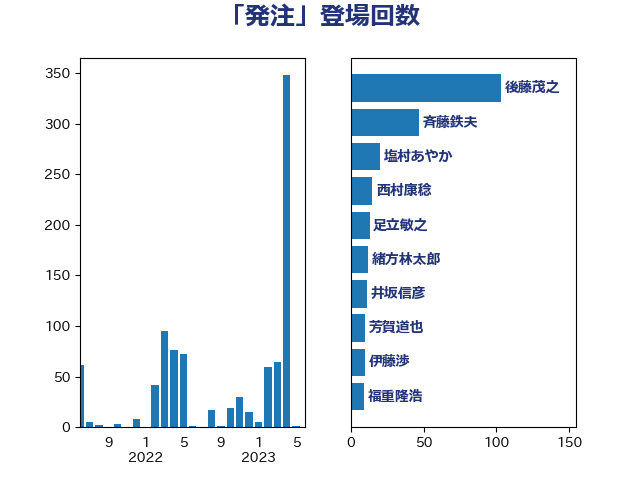

単語「発注」

| 平井卓也 | 自由民主党 | 36 回 |
| 斉藤鉄夫 | 公明党 | 34 回 |
| 赤羽一嘉 | 公明党 | 23 回 |
| 浅野哲 | 国民民主党 | 22 回 |
| 足立敏之 | 自由民主党 | 17 回 |
| 田村憲久 | 自由民主党 | 16 回 |
| 芳賀道也 | 国民民主党 | 13 回 |
| 後藤茂之 | 自由民主党 | 12 回 |
| 梶山弘志 | 自由民主党 | 11 回 |
| 田村まみ | 国民民主党 | 11 回 |
| 笠井亮 | 日本共産党 | 10 回 |
| 平木大作 | 公明党 | 7 回 |
| 森山浩行 | 立憲民主党 | 7 回 |
| 渡辺猛之 | 自由民主党 | 7 回 |
| 土田慎 | 自由民主党 | 6 回 |
| 城井崇 | 立憲民主党 | 6 回 |
| 本村伸子 | 日本共産党 | 6 回 |
| 杉久武 | 公明党 | 6 回 |
| 礒崎哲史 | 国民民主党 | 6 回 |
| 萩生田光一 | 自由民主党 | 6 回 |
| 野上浩太郎 | 自由民主党 | 6 回 |
| 田村貴昭 | 日本共産党 | 5 回 |
| 井坂信彦 | 立憲民主党 | 4 回 |
| 塩田博昭 | 公明党 | 4 回 |
| 岡本三成 | 公明党 | 4 回 |
| 西村康稔 | 自由民主党 | 4 回 |
| 高橋千鶴子 | 日本共産党 | 4 回 |
| 中野洋昌 | 公明党 | 3 回 |
| 丹羽秀樹 | 自由民主党 | 3 回 |
| 伊藤孝恵 | 国民民主党 | 3 回 |
| 吉良よし子 | 日本共産党 | 3 回 |
| 小田原潔 | 自由民主党 | 3 回 |
| 岩渕友 | 日本共産党 | 3 回 |
| 川田龍平 | 立憲民主党 | 3 回 |
| 斎藤洋明 | 自由民主党 | 3 回 |
| 末松信介 | 自由民主党 | 3 回 |
| 東徹 | 日本維新の会 | 3 回 |
| 熊谷裕人 | 立憲民主党 | 3 回 |
| 牧島かれん | 自由民主党 | 3 回 |
| 玉木雄一郎 | 国民民主党 | 3 回 |
| 里見隆治 | 公明党 | 3 回 |
| 野村哲郎 | 自由民主党 | 3 回 |
| 鈴木俊一 | 自由民主党 | 3 回 |
| 鈴木敦 | 国民民主党 | 3 回 |
| 長友慎治 | 国民民主党 | 3 回 |
| 長峯誠 | 自由民主党 | 3 回 |
| 中山展宏 | 自由民主党 | 2 回 |
| 井林辰憲 | 自由民主党 | 2 回 |
| 伊藤渉 | 公明党 | 2 回 |
| 佐藤英道 | 公明党 | 2 回 |
| 倉林明子 | 日本共産党 | 2 回 |
| 加田裕之 | 自由民主党 | 2 回 |
| 和田義明 | 自由民主党 | 2 回 |
| 国光あやの | 自由民主党 | 2 回 |
| 堀内詔子 | 自由民主党 | 2 回 |
| 小倉將信 | 自由民主党 | 2 回 |
| 小泉進次郎 | 自由民主党 | 2 回 |
| 山添拓 | 日本共産党 | 2 回 |
| 岸田文雄 | 自由民主党 | 2 回 |
| 新垣邦男 | 立憲民主党 | 2 回 |
| 杉本和巳 | 日本維新の会 | 2 回 |
| 柚木道義 | 立憲民主党 | 2 回 |
| 柳ヶ瀬裕文 | 日本維新の会 | 2 回 |
| 櫛渕万里 | れいわ新選組 | 2 回 |
| 江島潔 | 自由民主党 | 2 回 |
| 浜野喜史 | 国民民主党 | 2 回 |
| 清水真人 | 自由民主党 | 2 回 |
| 片山さつき | 自由民主党 | 2 回 |
| 矢倉克夫 | 公明党 | 2 回 |
| 福重隆浩 | 公明党 | 2 回 |
| 穀田恵二 | 日本共産党 | 2 回 |
| 竹谷とし子 | 公明党 | 2 回 |
| 紙智子 | 日本共産党 | 2 回 |
| 西銘恒三郎 | 自由民主党 | 2 回 |
| 赤嶺政賢 | 日本共産党 | 2 回 |
| 足立康史 | 日本維新の会 | 2 回 |
| 重徳和彦 | 立憲民主党 | 2 回 |
| 阿部司 | 日本維新の会 | 2 回 |
| 三原じゅん子 | 自由民主党 | 1 回 |
| 下野六太 | 公明党 | 1 回 |
| 仁木博文 | 無所属 | 1 回 |
| 今井絵理子 | 自由民主党 | 1 回 |
| 伊東信久 | 日本維新の会 | 1 回 |
| 佐藤啓 | 自由民主党 | 1 回 |
| 佐藤正久 | 自由民主党 | 1 回 |
| 北側一雄 | 公明党 | 1 回 |
| 古賀之士 | 立憲民主党 | 1 回 |
| 吉川元 | 立憲民主党 | 1 回 |
| 国定勇人 | 自由民主党 | 1 回 |
| 塩川鉄也 | 日本共産党 | 1 回 |
| 大口善徳 | 公明党 | 1 回 |
| 大塚拓 | 自由民主党 | 1 回 |
| 大島敦 | 立憲民主党 | 1 回 |
| 大河原まさこ | 立憲民主党 | 1 回 |
| 奥野総一郎 | 立憲民主党 | 1 回 |
| 室井邦彦 | 日本維新の会 | 1 回 |
| 宮内秀樹 | 自由民主党 | 1 回 |
| 宮本周司 | 自由民主党 | 1 回 |
| 小沼巧 | 立憲民主党 | 1 回 |
| 小野寺五典 | 自由民主党 | 1 回 |
| 山崎正恭 | 公明党 | 1 回 |
| 山本博司 | 公明党 | 1 回 |
| 山田美樹 | 自由民主党 | 1 回 |
| 岸信夫 | 自由民主党 | 1 回 |
| 平口洋 | 自由民主党 | 1 回 |
| 木村次郎 | 自由民主党 | 1 回 |
| 松川るい | 自由民主党 | 1 回 |
| 柴山昌彦 | 自由民主党 | 1 回 |
| 柴田巧 | 日本維新の会 | 1 回 |
| 森本真治 | 立憲民主党 | 1 回 |
| 櫻井周 | 立憲民主党 | 1 回 |
| 河西宏一 | 公明党 | 1 回 |
| 泉田裕彦 | 自由民主党 | 1 回 |
| 浜口誠 | 国民民主党 | 1 回 |
| 浦野靖人 | 日本維新の会 | 1 回 |
| 清水貴之 | 日本維新の会 | 1 回 |
| 渡辺周 | 立憲民主党 | 1 回 |
| 片山大介 | 日本維新の会 | 1 回 |
| 田畑裕明 | 自由民主党 | 1 回 |
| 石井章 | 日本維新の会 | 1 回 |
| 石川香織 | 立憲民主党 | 1 回 |
| 福田昭夫 | 立憲民主党 | 1 回 |
| 穂坂泰 | 自由民主党 | 1 回 |
| 菅家一郎 | 自由民主党 | 1 回 |
| 菅義偉 | 自由民主党 | 1 回 |
| 谷田川元 | 立憲民主党 | 1 回 |
| 輿水恵一 | 公明党 | 1 回 |
| 辻元清美 | 立憲民主党 | 1 回 |
| 近藤和也 | 立憲民主党 | 1 回 |
| 野田国義 | 立憲民主党 | 1 回 |
| 野田聖子 | 自由民主党 | 1 回 |
| 鈴木義弘 | 国民民主党 | 1 回 |
| 青柳仁士 | 日本維新の会 | 1 回 |
| 高木啓 | 自由民主党 | 1 回 |
| 高橋光男 | 公明党 | 1 回 |
| 高野光二郎 | 自由民主党 | 1 回 |
| 麻生太郎 | 自由民主党 | 1 回 |